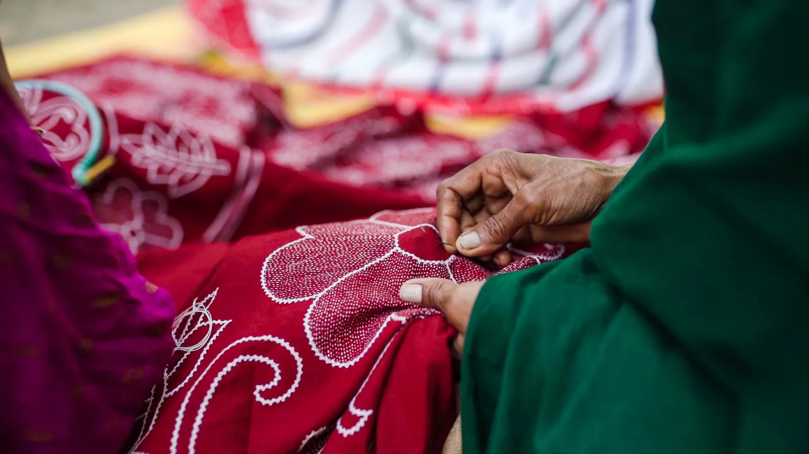
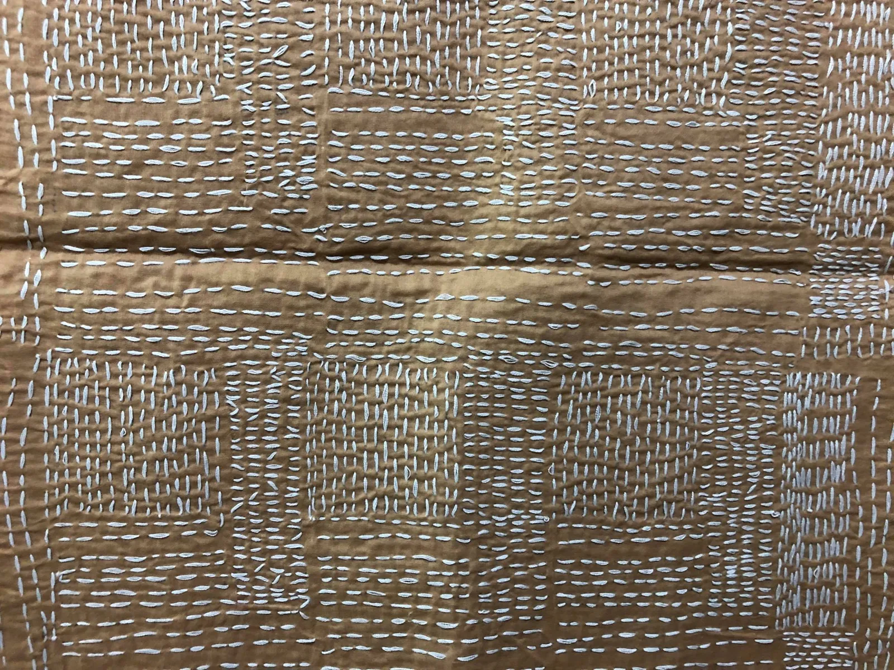
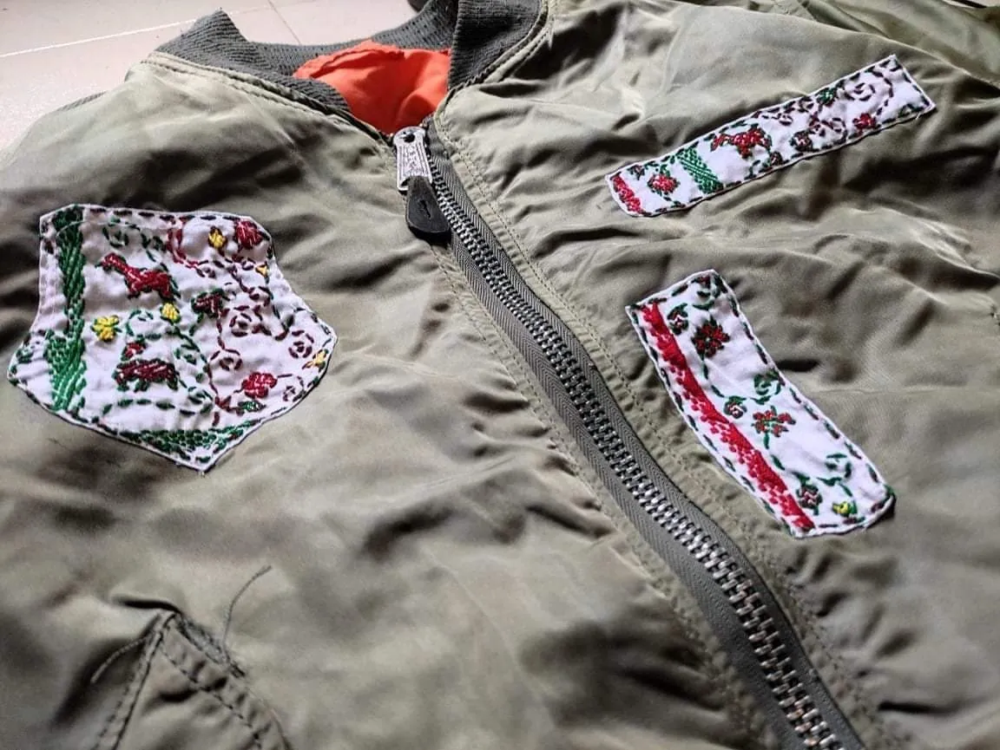

Home/Handcraft Line
Line 02 · Handcraft Line
Stitched and woven by hand, in small runs.
Nakshi kantha, jamdani, jute, leather and home textiles, made by women artisans in Bangladesh. Each piece is made by hand, so each one is slightly different.
- Minimum order
- Ask usper design
- Lead time
- Ask usafter sample approval
- Made by
- Women artisans in Bangladesh
- Good for
- Capsules, limited editions, details on factory-made garments.
Handwork takes time. Ask us, and we confirm the minimum and lead time for your design in your quote.



Materials
Choose a material.

Nakshi kantha
Running-stitch embroidery, stitched by hand.
Learn more→
Jamdani
Fine muslin, with motifs woven in by hand.
Learn more→
Jute
The golden fibre, spun, woven and braided.
Learn more→
Leather
Leather and factory offcuts, cut and stitched.
Learn more→
Recycled saree
Worn saris, cut and pieced into new cloth.
Learn more→Home textiles
Cushion covers, throws, table linen and quilts, in any of the materials above.
Working with handcraft
What to expect.

Who makes it
Women artisans, paid for skilled work.
Revival has worked with women artisans in Bangladesh to turn traditional stitching and weaving into paid work. Your order is part of that work.
About RevivalStart small
Start with a sample.
Send us your idea. We tell you which line fits, what the sample costs and how long it takes — before you commit to a production order.